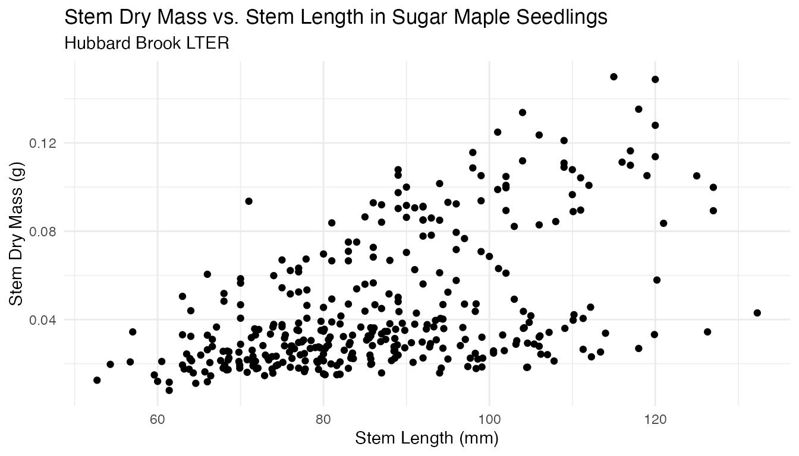
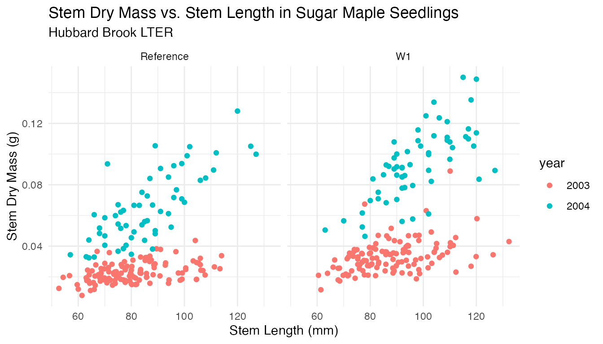

Hubbard Brook Experimental Forest Sugar Maples (HBR)
Growth of Sugar Maple (Acer saccharum) seedlings in response to calcium addition at the Hubbard Brook Experimental Forest
Source:vignettes/hbr_maples_vignette.Rmd
hbr_maples_vignette.RmdIntroduction
The hbr_maples dataset contains observations on sugar maple seedlings in untreated and calcium-amended watersheds at Hubbard Brook Experimental Forest in New Hampshire.
Growth of sugar maples (Acer saccharum), known for their maple syrup and iconic leaf shape, can be stunted due to soil acidification from prolonged acid rain, which leaches calcium - a nutrient important for plant growth - from soils and stresses maple seedlings (learn more: Decades of acid rain is causing loss of valuable Northeast sugar maples, Cornell researchers warn). To investigate the impact of soil calcium supplementation on sugar maple seedling growth, Stephanie Juice (an undergraduate at the time of the study, supported by the NSF REU program), Tim Fahey and colleagues at Hubbard Brook Long Term Ecological Research (LTER) site recorded “general sugar maple germinant health by height, leaf area, biomass, and chlorophyll content” (Juice and Fahey 2019) for seedlings in untreated and previously calcium-treated watersheds (Peters et al. 2004). By comparing seedling growth in calcium-treated (W1) versus untreated (Reference) watersheds, calcium impacts on sugar maple seedling growth can be explored (see the published results in Juice et al. 2006).
Dr. Stephanie Juice shares the following interesting history on their project: “The project originated from field observations that the seedlings in the calcium-treated watershed appeared to be more abundant and healthier than in the reference areas. They looked larger, greener, and had bigger root systems that held more soil on the roots when they were plucked out of the ground. Based on those observations, we set out to examine the differences between the sugar maple seedlings across treatments.”
Hubbard Brook LTER Information Manager Mary Martin provides an update on the ongoing project: “Tracking of sugar maple seedlings continues at [Hubbard Brook], and there is now a statewide citizen science effort to study sugar maple regeneration on Forest Society properties throughout the state.”


Want to incorporate more lessons with the iconic sugar maples at Hubbard Brook Experimental Forest? Check out this Sugar Babies Data Lesson which explores sugar maple seedling mortality data collected by Natalie Cleavitt.
Data Exploration
The hbr_maples data sample is in tidy format and contains both numeric and factor variables. Learn more about the variables in the dataset documentation (?hbr_maples).
glimpse(hbr_maples)
#> Rows: 359
#> Columns: 11
#> $ year <dbl> 2003, 2003, 2003, 2003, 2003, 2003, 2003, 2003, 20…
#> $ watershed <fct> Reference, Reference, Reference, Reference, Refere…
#> $ elevation <fct> Low, Low, Low, Low, Low, Low, Low, Low, Low, Low, …
#> $ transect <fct> R1, R1, R1, R1, R1, R1, R1, R1, R1, R1, R1, R1, R1…
#> $ sample <fct> 1, 2, 3, 4, 5, 6, 7, 8, 9, 10, 11, 12, 13, 14, 15,…
#> $ stem_length <dbl> 86.9, 114.0, 83.5, 68.1, 72.1, 77.7, 85.5, 81.6, 9…
#> $ leaf1area <dbl> 13.837, 14.572, 12.451, 9.974, 6.838, 9.660, 8.823…
#> $ leaf2area <dbl> 12.130, 15.267, 9.731, 10.068, 5.480, 7.643, 9.233…
#> $ leaf_dry_mass <dbl> 0.0453, 0.0476, 0.0423, 0.0397, 0.0204, 0.0317, 0.…
#> $ stem_dry_mass <dbl> 0.0300, 0.0338, 0.0248, 0.0194, 0.0180, 0.0246, 0.…
#> $ corrected_leaf_area <dbl> 29.104, 32.976, 25.319, 23.179, 15.455, 20.440, 21…First, let’s create an exploratory visualization of the data using ggplot. Is there evidence for differences in maple seedling height (millimeters) between the calcium-treated (W1) and untreated (reference) watersheds?
ggplot(data = hbr_maples, aes(x = watershed, y = stem_length)) +
geom_boxplot(aes(color = watershed, shape = watershed),
alpha = 0.8,
width = 0.5) +
geom_jitter(
aes(color = watershed),
alpha = 0.5,
show.legend = FALSE,
position = position_jitter(width = 0.2, seed = 0)
) +
labs(
x = "Watershed",
y = "Stem length (millimeters)",
title = "Stem Lengths of Sugar Maple Seedlings",
subtitle = "Hubbard Brook LTER"
) +
facet_wrap(~year) +
theme_minimal()In both years of the study (2003 and 2004) it appears that seedling heights shift toward longer stem lengths in the calcium-treated watershed (W1), compared to the untreated watershed.
Summary statistics
Taking our exploration a bit further, we can find basic summary statistics (mean, median, standard deviation, and sample size) for seedling heights in the two watersheds:
maple_summary <- hbr_maples %>%
drop_na(stem_length) %>%
group_by(year, watershed) %>%
summarize(
mean_length = mean(stem_length),
median_length = median(stem_length),
sd_length = sd(stem_length),
n = n()
)
maple_summary
#> # A tibble: 4 × 6
#> # Groups: year [2]
#> year watershed mean_length median_length sd_length n
#> <dbl> <fct> <dbl> <dbl> <dbl> <int>
#> 1 2003 Reference 81.0 79.8 13.9 120
#> 2 2003 W1 87.9 86.2 14.3 120
#> 3 2004 Reference 85.9 85 15.6 59
#> 4 2004 W1 97.5 95.5 13.8 60In both years, the mean and median seedling height (stem_length) are higher in the W1 (calcium-treated) watershed, compared to the Reference (untreated) watershed.
Seedling height distributions
We can also explore the distribution of stem lengths in each of the watersheds, using facet_grid() to split up the histograms by year and watershed:
ggplot(data = hbr_maples, aes(x = stem_length)) +
geom_histogram() +
theme_minimal() +
labs(
x = "Stem Length (mm)",
y = "Frequency",
title = "Distribution of Sugar Maple seedling stem lengths",
subtitle = "Hubbard Brook LTER"
) +
facet_grid(year ~ watershed)Means comparison
Here, we compare mean sugar maple seedling heights at the two watersheds in 2004 using a two-sided, two-sample t-test.
We include the t-test here because it is ubiquitous in environmental science literature and analyses, and this data sample provides clear motivation for comparing sizes between seedlings in the two treatments. However, as stated by Gene Glass and included in Sullivan & Feinn in their 2012 paper Using Effect Size—or Why the P Value Is Not Enough, “Statistical significance is the least interesting thing about the results.” The hbr_maples data sample provides opportunity to explore size differences more comprehensively, for example by calculating effect size, absolute or percent differences in seedling size, and means of comparison.
F-test for equal variance
Having explored distributions in the histograms above, we can conclude that the data are approximately normal. As a next step, we will use var.test() to test for equal variances of 2004 seedling height (stem_length, in millimeters) observations in each watershed.
Null and alternative hypotheses:
\(H_0:\) Ratio of variances is equal to 1 (equal variances)
\(H_A:\) Ratio of variances is not equal to 1 (unequal variances)
hbr_maples %>%
filter(year == 2004) %>%
var.test(stem_length ~ watershed, data = .)
#>
#> F test to compare two variances
#>
#> data: stem_length by watershed
#> F = 1.2701, num df = 58, denom df = 59, p-value = 0.3626
#> alternative hypothesis: true ratio of variances is not equal to 1
#> 95 percent confidence interval:
#> 0.7573898 2.1323658
#> sample estimates:
#> ratio of variances
#> 1.270104With a p-value > 0.05, we fail to reject the null hypothesis that the ratio of the variances of the two watersheds is equal, and continue with the assumption of equal variances.
Now, we’ll do a two-sided two-sample t-test using t.test() to determine if there is a statistically significant difference in seedling height between the watersheds (using only 2004 observations).
Two-sided, two-sample t-test
Null and alternative hypotheses:
\(H_0: \mu_{1} = \mu_2\)
\(H_A: \mu_{1} \ne \mu_2\)
By default, t.test() will use a Welch t-test that does not assume equal variances (default argument is var.equal = FALSE). We set var.equal = TRUE based on the outcome of our F-test above:
hbr_maples %>%
filter(year == 2004) %>%
t.test(stem_length ~ watershed,
var.equal = TRUE,
data = .)
#>
#> Two Sample t-test
#>
#> data: stem_length by watershed
#> t = -4.3092, df = 117, p-value = 3.432e-05
#> alternative hypothesis: true difference in means between group Reference and group W1 is not equal to 0
#> 95 percent confidence interval:
#> -16.982759 -6.287862
#> sample estimates:
#> mean in group Reference mean in group W1
#> 85.88136 97.51667Based on the outcome of this t-test, we determine that mean seedling heights in the reference watershed (no calcium treatment) differ significantly from those in the calcium-treated watershed (W1). Remember: the outcome of this hypothesis test is one small piece of a more comprehensive comparison of sugar maple seedling heights between the two watersheds.
Further Analysis Ideas
The hbr_maples data sample provides additional opportunity for analysis and data science skill-building. For example, stem length versus seedling mass provides regression opportunities:
ggplot(hbr_maples) +
geom_point(aes(x = stem_length, y = stem_dry_mass)) +
labs(
x = "Stem Length (mm)",
y = "Stem Dry Mass (g)",
title = "Stem Dry Mass vs. Stem Length in Sugar Maple Seedlings",
subtitle = "Hubbard Brook LTER"
) +
theme_minimal()
Which is clarified when separated by study year and watershed:
ggplot(hbr_maples) +
geom_point(aes(x = stem_length, y = stem_dry_mass, color = factor(year))) +
labs(
x = "Stem Length (mm)",
y = "Stem Dry Mass (g)",
title = "Stem Dry Mass vs. Stem Length in Sugar Maple Seedlings",
subtitle = "Hubbard Brook LTER",
color = "year"
) +
facet_wrap(~watershed) +
theme_minimal()
And many more! Enjoy exploring and analyzing the impact of calcium addition on sugar maple seedling growth.
Acknowledgements
Our sincere thanks to: Hubbard Brook LTER Information Manager Mary Martin for reviewing this vignette, providing additional information on ongoing sugar maple research, and connecting us with researchers on the project; Natalie Cleavitt for providing photos and sharing the Sugar Babies Data Lesson; Stephanie Juice for reviewing the vignette, providing additional citations, and for the fun history of the project; and Peter Groffman and Pamela Templer for their review and edits.
Citations
Juice, S. and T. Fahey. 2019. Health and mycorrhizal colonization response of sugar maple (Acer saccharum) seedlings to calcium addition in Watershed 1 at the Hubbard Brook Experimental Forest ver 3. Environmental Data Initiative. https://doi.org/10.6073/pasta/0ade53ede9a916a36962799b2407097e (Accessed 2021-05-17).
Juice, S.M., T.J. Fahey, T.G. Siccama, C.T. Driscoll, E.G. Denny, C. Eagar, N.L. Cleavitt, R. Minocha, and A.D. Richardson. 2006. Response of sugar maple to calcium addition to northern hardwood forest. Ecology, 87: 1267-1280. https://doi.org/10.1890/0012-9658(2006)87[1267:ROSMTC]2.0.CO;2
Peters, S.C., J.D. Blum, C.T. Driscoll, and G.E. Likens. 2004. Dissolution of wollastonite during the experimental manipulation of Hubbard Brook Watershed 1. Biogeochemistry 67: 309–329.
How we processed the raw data
Download the raw data from EDI.org
library(usethis)
library(metajam)
library(tidyverse)
library(janitor)
# Health and mycorrhizal colonization response of sugar maple (Acer saccharum) seedlings to calcium addition in Watershed 1 at the Hubbard Brook Experimental Forest
# Main URL: https://doi.org/10.6073/pasta/0ade53ede9a916a36962799b2407097e
hbr_url <-
"https://portal.edirepository.org/nis/dataviewer?packageid=knb-lter-hbr.157.3&entityid=5c415a399b00430d35d13c31312f1e53"
# Download the data package with metajam
hbr_download <-
download_d1_data(data_url = hbr_url, path = tempdir())Data cleaning
# Read in data
hbr_files <- read_d1_files(hbr_download)
hbr_maples_raw <- hbr_files$data
hbr_maples <- hbr_maples_raw %>%
clean_names() %>%
select(-root_area,-root_length,-root_dry_mass) %>%
# change values of -999 to NA
mutate(
leaf1area = replace(leaf1area, which(leaf1area < 0), NA),
leaf2area = replace(leaf2area, which(leaf2area < 0), NA),
corrected_leaf_area = replace(corrected_leaf_area, which(corrected_leaf_area < 0), NA),
watershed = as.factor(watershed),
elevation = as.factor(elevation),
transect = as.factor(transect),
sample = as.factor(sample)
)